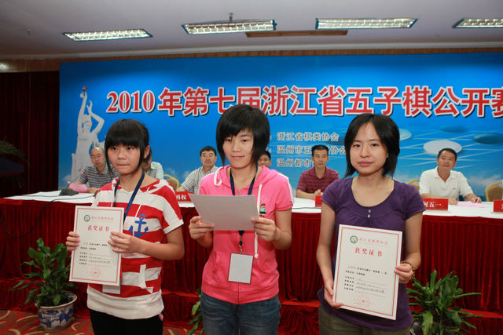

第七届浙江赛现场照片
#1 第七届浙江赛现场照片作者：被感动的人 发表时间：2010-8-31 20:30:10
开幕式
首轮儿童男子组最令人关注的对局，首次参加比赛的温州选手张逸晟PK宁波小将卢申捷（本届儿童男子亚军），在温州其他少儿选手失利的情况下，誓死守卫，终于逼得卢申捷提和。而这0.5分之差也最终导致卢申捷屈居亚军。张逸晟一战力竭，之后表现不佳。却因此给我留下很深的印象。（摘自11楼，感谢连珠秀MM）
选手牌啊选手牌，你转过来多好~（括弧：要来了伟鬼ls的说明：这是记者在下棋，嘿嘿！）
白痴对无聊鬼，A组十大明星中的两位相遇，这网名别有韵味啊——
选手是俩小帅哥，裁判是浙江非常可爱的汤圆老师，像不像伟鬼？
其中一个是给我们直播A组赛事的，我赛后才知道原来直播员要自己去抄谱…早知道的话当时就不拉着聊天问事了~
A组冠军小天，对面是网上大大有名的棋情~
看到这张以后我突然发现，原来戴眼镜的棋手不少哇~ 隆重介绍左侧世界冠军大鱼，再次介绍右侧乃是浙江著名棋手无聊鬼！
正对着我们的是美丽的狮子，对面的美女是湖北黄莹琼
智运会九连胜提前锁定女子组冠军的汪清清（强悍啊强悍）对面帅哥是

曾经被浙江当做秘密武器的“雪藏”棋手李磊，现在估计该称呼他为利刃了~对面的棋手执子姿势好专业啊~
目光炯炯的白痴vs气定神闲的米兰
竭力拼杀的棋手and辛苦记谱的直播员——美丽的加贝
姿态各异~谁认识哪个可以逐一介绍哇
可爱的小人儿，美丽的小手，水灵灵的名字~
色彩和谐而鲜明——可敬的棋手们！看到这张照片，我想起殷明华写的棋为他们带来了什么
两位老师做规则介绍，台上两位老师，台下一群桃李
我一眼认出正在讲解的是朱建峰，经过提醒我也没看出另一个就是…就是…嘿嘿，让大家说吧，另一个老师是谁？
赛场内比五子棋，赛场外再拼围棋。谁怕谁？
照片为黄琼莹和无聊鬼在欢迎酒会后PK围棋

照片持续添加中~ 敬请期待！
［ weigui 于 2010-8-31 21:34:39 时花20金币送鲜花一朵］
［ 无尽 于 2010-9-1 12:36:31 时奖励此帖[金币加 100 威望加1］
［此帖子已被 被感动的人 在 2010-9-2 20:53:22 编辑过］
［ 龙小小 于 2010-9-5 20:56:05 时花20金币送鲜花一朵］
［ 掌棋宣传员 于 2010-9-17 12:56:39 时花20金币送鲜花一朵］
［ 掌棋宣传员 于 2010-9-17 12:56:41 时花20金币送鲜花一朵］
［ 掌棋宣传员 于 2010-9-17 12:56:43 时花20金币送鲜花一朵］
［ 掌棋宣传员 于 2010-9-17 12:56:45 时花20金币送鲜花一朵］
［ 掌棋宣传员 于 2010-9-17 12:56:46 时花20金币送鲜花一朵］
#2 Re:第七届浙江赛现场照片作者：被感动的人 发表时间：2010-8-31 21:35:51
伟鬼老师的第一朵花~发帖纪念一下
#3 Re:第七届浙江赛现场照片作者：被感动的人 发表时间：2010-8-31 21:38:41





［此帖子已被 被感动的人 在 2010-9-6 19:42:42 编辑过］
#4 Re:第七届浙江赛现场照片作者：被感动的人 发表时间：2010-8-31 21:39:02
再占一楼~#5 Re:第七届浙江赛现场照片作者：松痕 发表时间：2010-8-31 22:29:52
关注下，看到了想看的人啊，哈哈。
#6 Re:第七届浙江赛现场照片作者：萱萱 发表时间：2010-8-31 22:38:47
 好期待更多精彩的PP
好期待更多精彩的PP#7 Re:第七届浙江赛现场照片作者：苯酚 发表时间：2010-9-1 0:11:34
朱建峰旁边的是不是谭咏麟啊
#8 Re:第七届浙江赛现场照片作者：菜包先生 发表时间：2010-9-1 0:42:15
打领带的肯定是李一了［ 足球赛 于 2010-9-1 8:57:59 时花50金币砸了你一个臭鸡蛋］
［ 被感动的人 于 2010-9-1 18:49:55 时花20金币送鲜花一朵］
#9 Re:第七届浙江赛现场照片作者：足球赛 发表时间：2010-9-1 9:34:25
你喜欢砸人,今天砸你一枚#10 Re:第七届浙江赛现场照片作者：苯酚 发表时间：2010-9-1 11:44:18
 原来那个是领带啊，好像确是李一
原来那个是领带啊，好像确是李一
［ 被感动的人 于 2010-9-1 18:50:13 时花20金币送鲜花一朵］
#11 Re:第七届浙江赛现场照片作者：莲珠秀 发表时间：2010-9-1 12:37:07
首轮儿童男子组最令人关注的对局，首次参加比赛的温州选手张逸晟PK宁波小将卢申捷（本届儿童男子亚军），在温州其他少儿选手失利的情况下，誓死守卫，终于逼得卢申捷提和。而这0.5分之差也最终导致卢申捷屈居亚军。张逸晟一战力竭，之后表现不佳。却因此给我留下很深的印象。
［ 被感动的人 于 2010-9-1 18:48:04 时奖励此帖[金币加 100 威望加1］
［ 掌棋宣传员 于 2010-9-17 12:57:29 时花20金币送鲜花一朵］
［ 掌棋宣传员 于 2010-9-17 12:57:30 时花20金币送鲜花一朵］
［ 掌棋宣传员 于 2010-9-17 12:57:32 时花20金币送鲜花一朵］
#12 Re:Re:第七届浙江赛现场照片作者：菜包先生 发表时间：2010-9-1 12:51:26
引用：不要和个娘们一样，只会在讯息上骂人。是个男人的话，10月2号来石家庄。
原文由 菜包先生 发表于 2010-9-1 0:42:15 :
打领带的肯定是李一了［ 足球赛 于 2010-9-1 8:57:59 时花50金币砸了你一个臭鸡蛋］
［ 掌棋宣传员 于 2010-9-17 12:57:49 时花20金币送鲜花一朵］
#13 Re:Re:第七届浙江赛现场照片作者：我就不信注册不上 发表时间：2010-9-1 18:39:32
引用：您金币太少，我就不招惹您了
原文由 足球赛 发表于 2010-9-1 9:34:25 :
你喜欢砸人,今天砸你一枚
［ 掌棋宣传员 于 2010-9-17 12:57:43 时花20金币送鲜花一朵］
#14 Re:第七届浙江赛现场照片作者：被感动的人 发表时间：2010-9-1 18:49:09
足球赛朋友：如果你跟谁有什么恩怨请去私下解决。谢谢［ 掌棋宣传员 于 2010-9-17 12:57:59 时花20金币送鲜花一朵］
#15 Re:第七届浙江赛现场照片作者：被感动的人 发表时间：2010-9-1 18:53:18
to松痕：到底看见谁了啊？
to苯酚：多谢参与！
to菜包：火眼金睛啊~送花送花~
to连珠秀：谢谢谢谢！期待更多比赛背后的感触和故事~
#16 Re:第七届浙江赛现场照片作者：潜龙勿用吉 发表时间：2010-9-1 18:55:57
我觉得像棋情#17 Re:Re:第七届浙江赛现场照片作者：屏蔽 发表时间：2010-9-1 19:16:36
引用：
原文由 潜龙勿用吉 发表于 2010-9-1 18:55:57 :
我觉得像棋情
本来我不想冒泡的……你说像别人也就算了……真的像棋情嘛？……
#18 Re:第七届浙江赛现场照片作者：被感动的人 发表时间：2010-9-1 19:26:08
 16楼的同学你太让我感慨了！我就认了半天没看出是李一ls来，就是明知道去讲课的有李一ls我都没看出是他，就是明知道照片上的就是他我都看着不像！没想到还真有跟我一样的人哇~ 我都奖励了猜对的朋友了你居然还说像棋情，没啥好说的，跟我有一比~
16楼的同学你太让我感慨了！我就认了半天没看出是李一ls来，就是明知道去讲课的有李一ls我都没看出是他，就是明知道照片上的就是他我都看着不像！没想到还真有跟我一样的人哇~ 我都奖励了猜对的朋友了你居然还说像棋情，没啥好说的，跟我有一比~#19 Re:第七届浙江赛现场照片作者：厦门小天 发表时间：2010-9-1 19:40:13
 一直认同李道长跟棋情很像
一直认同李道长跟棋情很像#20 Re:第七届浙江赛现场照片作者：米兰 发表时间：2010-9-1 20:31:29
明年浙江赛大家会发现。棋情还在A组。。。。［ 掌棋宣传员 于 2010-9-17 12:58:36 时花20金币送鲜花一朵］
#21 Re:Re:第七届浙江赛现场照片作者：慕容晓文 发表时间：2010-9-1 22:17:54
引用：
原文由 米兰 发表于 2010-9-1 20:31:29 :
明年浙江赛大家会发现。棋情还在A组。。。。

慕容晓文朋友：抱歉啊，我原说帮忙编辑下面帖子里的照片来着，误操作了你的帖子，不过我没对你这个帖子做改动哈，只留下了编辑足迹。
［此帖子已被 被感动的人 在 2010-9-2 20:36:51 编辑过］
#22 Re:第七届浙江赛现场照片作者：棋情 发表时间：2010-9-1 22:30:52
［ 掌棋宣传员 于 2010-9-17 12:59:04 时花20金币送鲜花一朵］
#23 Re:第七届浙江赛现场照片作者：水月 发表时间：2010-9-1 23:16:36
狮子，扇子呢？#24 Re:第七届浙江赛现场照片作者：苯酚 发表时间：2010-9-1 23:45:00
我挺奇怪的，怎么总见李一“道长”打领带的#25 Re:第七届浙江赛现场照片作者：游戏人间 发表时间：2010-9-2 0:54:47
不打领带就是棋情了，必须的区别［ 掌棋宣传员 于 2010-9-17 12:59:19 时花20金币送鲜花一朵］
#26 Re:第七届浙江赛现场照片作者：裁决殿雪月 发表时间：2010-9-2 1:50:57
难道只能从领带上区分吗
#27 Re:第七届浙江赛现场照片作者：锐 发表时间：2010-9-2 10:27:52
有没搞错啊，李一哪像棋情了，，，，，，［ 掌棋宣传员 于 2010-9-17 12:59:35 时花20金币送鲜花一朵］
#28 Re:第七届浙江赛现场照片作者：周光乐 发表时间：2010-9-2 11:12:20
李一帅还是棋情帅， 求真相#29 Re:第七届浙江赛现场照片作者：莲珠秀 发表时间：2010-9-2 19:14:42
这里的照片怎么发？不明确，先试下

［此帖子已被 莲珠秀 在 2010-9-2 19:18:01 编辑过］
#30 Re:第七届浙江赛现场照片作者：莲珠秀 发表时间：2010-9-2 19:32:54
赛场内比五子棋，赛场外再拼围棋。谁怕谁？
照片为黄琼莹和无聊鬼在欢迎酒会后PK围棋
［此帖子已被 【掌棋】夏天 在 2010-9-2 20:14:12 编辑过］
［此帖子已被 被感动的人 在 2010-9-2 21:32:01 编辑过］
#31 Re:第七届浙江赛现场照片作者：被感动的人 发表时间：2010-9-2 20:07:19
回楼上jj：将图片下载到本地再上传#32 Re:第七届浙江赛现场照片作者：屏蔽 发表时间：2010-9-2 21:20:15
quote:
赛场内比五子棋，赛场外再拼围棋。谁怕谁？
照片为黄琼莹和无聊鬼在欢迎酒会后PK围棋
我说怎么他们第二天都悲剧了呢……
#33 Re:第七届浙江赛现场照片作者：被感动的人 发表时间：2010-9-4 19:50:34
不晓得怎么回事，新照片传不上来啊，还不到100K的说。。。大家等等吧，我网好了再传#34 Re:第七届浙江赛现场照片作者：一期一会 发表时间：2010-9-5 0:55:07
無聊大叔圍棋還有兩下子嘛！不過白棋還是真難受，爲什麽會爬成這樣。。。。>_<#35 帮29楼发作者：我就不信注册不上 发表时间：2010-9-5 2:35:34
#36 Re:Re:第七届浙江赛现场照片作者：如霜 发表时间：2010-9-5 11:11:11
引用：同意！
原文由 游戏人间 发表于 2010-9-2 0:54:47 :
不打领带就是棋情了，必须的区别
#37 Re:第七届浙江赛现场照片作者：苯酚 发表时间：2010-9-5 20:05:57
 冒昧的问一下李一道长的身高有多少？没175吧？
冒昧的问一下李一道长的身高有多少？没175吧？#38 Re:第七届浙江赛现场照片作者：龙小小 发表时间：2010-9-5 20:56:55
好想去看下真人，呵呵#39 Re:Re:第七届浙江赛现场照片作者：迷糊娃娃 发表时间：2010-9-17 12:11:00
引用：
原文由 屏蔽 发表于 2010-9-2 21:20:15 :quote:
赛场内比五子棋，赛场外再拼围棋。谁怕谁？
照片为黄琼莹和无聊鬼在欢迎酒会后PK围棋
我说怎么他们第二天都悲剧了呢……
我有悲剧了吗？
［ 掌棋宣传员 于 2010-9-17 13:00:32 时花20金币送鲜花一朵］
［ 掌棋宣传员 于 2010-9-17 13:00:34 时花20金币送鲜花一朵］
［ 掌棋宣传员 于 2010-9-17 13:00:36 时花20金币送鲜花一朵］
［ 雨一直下 于 2010-9-17 22:30:24 时奖励此帖[金币加 100 威望加1］
#40 Re:第七届浙江赛现场照片作者：屏蔽 发表时间：2010-9-17 18:12:22
quote:我有悲剧了吗？#41 Re:第七届浙江赛现场照片作者：萱萱 发表时间：2010-9-24 0:10:45
 我也想上传PP，谁愿意教我
我也想上传PP，谁愿意教我#42 Re:第七届浙江赛现场照片作者：有志青年 发表时间：2010-9-24 6:08:00
点击帖子的回复按钮，而不是直接在帖子下面回复
此时会有一个上传附件，你上传照片即可，建议照片稍微小一些。
［ 萱萱 于 2010-9-25 20:42:43 时花20金币送鲜花一朵］
#43 Re:第七届浙江赛现场照片作者：萱萱 发表时间：2010-9-25 20:42:31
谢谢有志青年，我已经学会了～